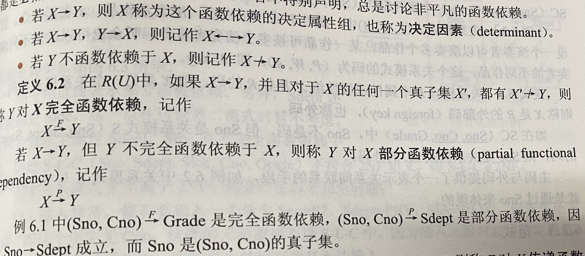
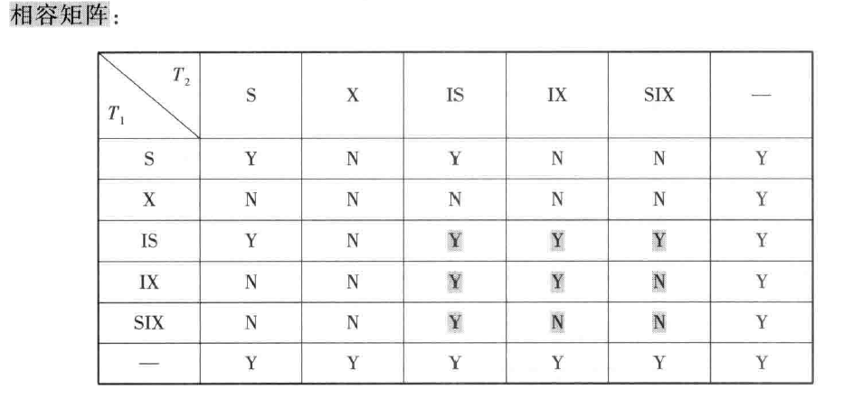
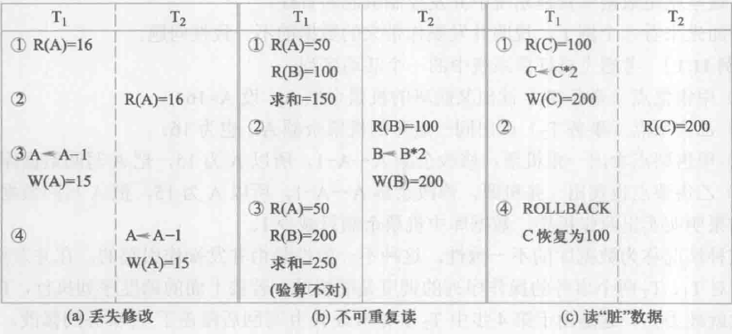
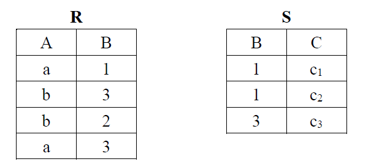
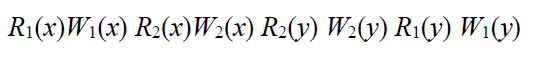
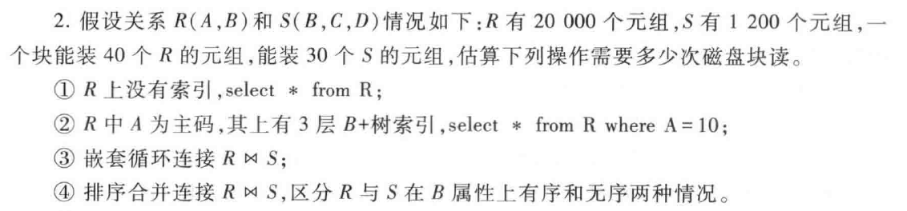
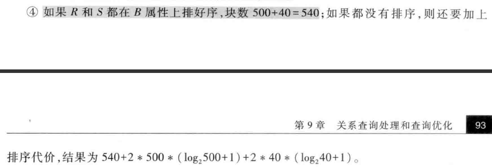

数据库期末复习
目前要做的
第七章画E-R图
第九章画语法分析树
第九章画语法分析树
第九章画语法分析树
第三章所有SQL语句熟悉

ALTER TABLE TEST
ADD UNIQUE(NAME)
ADD CONSTRAINT C1 CHECK(NT>0)
ADD c1 INTEGER
ALTER Sage INT
DROP TABLE CASACDE;
CREATE UNIQUE INDEX NAME ON Student(Sno)
指定别名
SELECT Sname Name（用空格将属性与别名分开）
去重：SELECT DISTINCT SNO
范围内判断：WHERE Sage BETWEEN 20 AND 23;（包括20和23）
字符匹配：
%：表示任意长度的字符串（可以为0），例如a%b
注意：WHERE子句中是不能用聚集函数作为条件表达式的，聚集函数只能用于SELECT子句和GROUP BY中的HAVING 子句。
GROUP BY子句示例：
SELECT Sno，AVG(Grade)
FROM SC
GROUP BY Sno
HAVING AVG（Grade）>=90;
即，WHERE子句作用于基本表或视图，而HAVING作用于组，从中选择出满足条件的组。
外连接：
SELECT *
FROM Student LEFT OUTER JOIN SC ON（Student.Sno=SC.Sno);
相关子查询：
SELECT SNO,CNO
FROM SC X
WHERE GRADE>=
(SELECT AVG(GRADE)
FROM SC Y
WHERE X.SNO=Y.SNO);
派生表
FROM SC,(SELECT SNO,AVG(GRADE) FROM SC GROUP BY SNO) AS T2
UPDATE TABLE
SET VALUE=
WHERE SNO=
第九章画语法分析树
第五章SQL语句书写（ON DELETE CASCADE CREATE TRIGGER)
第九章画语法分析树
第四章SQL语句书写（GRANT TO REVOKE FROM)
GRANT ALL PRIVILEGES
ON TABLE SC
TO PUBLIC
WITH ADMIN OPTION;
REVOKE UPDATE(SNO)
ON TABLE SC
FROM PUBLIC;
CREATE VIEW CS_Student
AS
第九章画语法分析树
概念清晰

BCNF在函数依赖范畴内实现了模式的彻底分解，消除了插入异常和删除异常。
关系数据库中的的所有关系模式必须满足第一范式
数据字典是关于数据库中数据的描述，即元数据，而不是数据本身。它是在需求分析阶段建立，在数据库设计过程中不断修改、充实、完善的
最小依赖集/最小覆盖：函数依赖集中任一函数依赖的右部仅含有一个属性

三级模式
数据库的三级模式结构由外模式、模式和内模式三级构成
它属于内部的体系结构
模式：也称逻辑模式，是数据库中全体数据的逻辑结构和特征的描述，是所有用户的公共数据视图。
外模式也称用户模式，它是数据库用户能够看见和使用的局部数据的逻辑结构和特征的描述。
自然连接和等值连接

在等值连接中把目标列种重复的属性列去掉就成了自然连接，即自然连接是特殊的等值连接
等值连接必须要有等值的条件，当条件不同时连接的结果也不相同，两个关系可以没有相同的属性列
自然连接必须要有相同的属性列才能进行，即等值连接之后要去除相同的属性列
选择、投影、自然连接的概念
聚簇索引：适用于最经常查询的属性列
数据库安全性控制主要包括用户身份鉴别、多层存取控制、审计、视图和数据加密等
关于封锁协议：
一级：修改前加X锁，直到事务结束后才释放，不是修改完就释放
二级：一级基础上加读取前加S锁，读完即可释放，而不是事务结束后
三级：一级基础上加读取前加S锁，直到事务结束后才释放，不是修改完就释放
关于三个错误读写
1、丢失修改：T1和T2读入同一数据并修改，T2提交的结果破坏了T1的结果，T1修改丢失。
2、不可重复读：T1读取数据后，T2进行了更新操作，导致T1无法再现前一次读取结果。
3、读脏数据：在T1执行完事务后T2读取了1中的数据，但1之后进行了ROLLBACK，此时T2读取了脏数据。

选择题押题
概念模型：现实世界到机器世界的中间层次
数据模型通常由数据结构、数据操作和完整性约束三部分构成。
DBMS是一类系统软件，它是建立在操作系统之上的
从逻辑模型到物理模型的转换一般是由DBMS完成的
在数据管理技术发展过程中，需要应用程序管理数据的系统是（人工管理阶段）
关系是笛卡尔积的有限子集，无限关系在数据库系统中是无意义的。
关系模型中可以有三类完整性约束：实体完整性，参照完整性，用户定义的完整性。
关系模型的完整性规则就是对关系的某种约束条件。
①主属性不能取空值
②若外码是该表的主码，则此时外码不能取空值。
关系数据库规范化是为解决关系数据库中的（操作异常和数据冗余）问题而引入的。
封锁就是事务T在对某个数据对象（如表、记录）操作之前，先向系统发出请求，对其加锁。
避免活锁的简单办法：采用先来先服务的策略
若并发执行的所有事务都遵守两端锁协议，则对这些事务的任何并发调度都是可串行化的
遵守两端锁协议的事务可能发生死锁
填空题押题
数据库系统和文件系统的本质区别是：数据库系统实现了数据的结构化。
数据独立性包括数据的物理独立性和逻辑独立性
最经常使用的概念模型是E-R模型
关系模型的三个部分分别是 关系数据结构 关系操作集合 关系完整性约束
代数的基本运算有选择、投影、并、差、笛卡尔积五种
关系的每一个分量必须是不可分的数据项。
关系操作的对象和结果都是集合
数据库角色是权限的集合
当且仅当调度是可串行化调度时，多个并发事务才能正确执行
数据库的安全性是指保护数据库以防止不合法使用所造成的数据泄露、更改或破坏
被认为是真正意义上的安全产品处于B1等级
每个用户标识由用户名和用户标识号两部分组成
存取控制机制主要包括定义用户权限和合法权限检查两部分
用户对某一数据对象的操作权力称为权限，有两个要素构成：数据库对象和操作类型
主体的敏感度标记称为许可证，客体的敏感度标记称为密级。
在对用户授予列INSERT权限时，一定要包含对主码的INSERT权限，否则用户的插入会因为空值被拒绝。除了授权的列，其他列的值或者取默认值，或者为空值。
在数据库故障恢复策略中，系统能自动恢复的是事务故障和系统故障
数据库的完整性是指数据库的正确性和相容性
关系R的属性A参照引用关系T的属性A，T的某条元组对应的A属性在R中出现，当要删除T的这条元组时，系统可以采用的策略包括 拒绝执行 级联删除 置为空值
数据依赖最重要的是函数依赖和多值依赖
事务是恢复和并发控制的基本单位
事务的ACID特性：原子性、一致性、隔离性、持续性（永久性）
事务是数据库的逻辑工作单位。
日志文件的作用：
①用来进行事务故障恢复和系统故障恢复。
②协助后备副本进行介质故障恢复
对系统影响最为严重的一种故障是介质故障
解决介质故障的一种常用方法是数据库镜像
并发控制可以保证事务的一致性和隔离性
可串行性是并发事务正确调度的准则
简答题押题
概念问答：
数据库系统的特点：
（1）数据结构化
（2）数据的共享性高、冗余度低、易于扩充
（3）数据的独立性高
什么是DAC：DAC，在C2级，即自主存取控制，用户对不同的数据库对象有不同的存取权限，定义存取权限称为授权
什么是MAC：MAC，在B1级，即强制存取控制，每一个数据库对象被标以一定的密级，对于任意一个对象，只有具有合法许可证的用户才可以存取。
关于除法：
做题步骤：以下图为例题

先将R和S的属性组化为三个部分，其中，第二部分为R和S的公共属性组
比如R（A,B,C） S（B,C,D），则化为 A 、BC、D三个部分
本题中化为A、B、C三个部分
写出第一部分的象集（就是除了A，R表中和他同一行的元素）
a：1、3
b：2、3
再写出第二部分在S上的投影（记得去重）
投影为1、3
发现和a的象集一致
则，R÷S={a1}，作图得
| A |
|---|
| a1 |
关于自然连接：
记得做完关系代数后去重。若为等值连接，则要进行区分，比如R.A R.B等
左外连接：保留左边全部，右边可以为null，右外相反。
如何判断调度是否为冲突可串行化调度：
如果不能，则原因一定为：
题中所给的序列，所有的相邻操作，要么都是不同事务直接的冲突操作（读写挨在一起），要么就是同一事务的两个操作。此时该序列无法交换为T1T2的串行调度，则一定不是冲突可串行化调度。

为什么要先写日志文件再写数据库？
答：把对数据的修改写到数据库中和把表示这个修改的日志记录写到日志文件中是两个不同的操作。有可能在这两个操作之间发生故障，即这两个写操作只完成了一个。
如果先写了数据库修改，而在运行记录中没有登记这个修改，则以后就无法恢复这个修改了。如果先写日志，但没有修改数据库，在恢复时只不过是多执行一次UNDO操作，并不会影响数据库的正确性。所以一定要先写日志文件，即首先把日志记录写到日志文件中，然后写数据库的修改。
可能会考到的计算题
第九章关于几种算法的执行代价估算
例题如下

一二题较为简单，答案如下
第三题属于嵌套循环连接算法，设连接表R与S分别占有的块数为Br与Bs，连接操作使用的内存缓冲区块数为K，分配K-1块给外表。此时应选取块数小的表为外表（比如R表），存取的块数为Br+Bs/（K-1）
第四题属于排序合并连接，分为已排序和未排序两种情况，若已排序，块数就为二者的块数之和。
若未排序，则还要加上分别对两个表排序的代价：2B+2BlogB

设计题押题
如何从头画E-R图？
（1）找出所有实体和联系
（2）实体画矩形，联系进行概括，画菱形
（3）记得在联系两侧表明数量（如1-n，m-n）
（4）最后标清楚实体的属性，用椭圆画（题目中会给）
E-R图怎么转换为关系模型？
（1）一个1：1联系可以转换为一个独立的关系模式，也可以与任意一端对应的关系模式合并
（2）一个1：n联系可以转换为一个独立的关系模式，也可以与n端对应的关系模式合并
本题中，医院——科室、科室——医生均进行了合并，需要在n端的属性中加入1端的主码作为外码
（3）一个m：n联系转换为一个关系模式，与该联系相连的各实体的码以及联系本身的属性均转换为关系的属性，各实体的码组成关系的码（即存在多个候选码）。
综合题押题
易错点：
select distinct sno，在商品表，成绩表中，查询结果要记得去重
insert的使用：可以只插入部分属性
例如：insert into item(no,name,import)
values(“12345”,“ssss”,“1”);
注意通配符的使用：
例如限定商品的名称，要使用%或者_等
关于聚集函数的综合SQL书写：
触发器的编写，多写几个先试试：

关于范式的判断
先判断有没有非主属性对码的部分依赖，若有直接是1NF
⭐️若关系模式R的主码由单属性构成，则一定属于2NF
再判断是否存在传递依赖，若不存在即为3NF
⭐️若关系模式R的主码为全码构成，则一定属于3NF
再判断决定因素（箭头左边的）是否都为码，若是则为BCNF
⭐️如果每一个决定属性集都包含候选码，则R一定属于BCNF
如何对范式进行分解？
1->2 把部分依赖关系拆成单独的关系，使不存在部分依赖
2->3 把传递依赖的拆开称为单独的关系
关于多值依赖
如何画SQL查询树
问初始化的，先画最原始的语法树（带project的那个）
优化时，先对表进行选择，再对表进行连接，最后再select
重点：看一遍第十章，不太熟,去第三章熟悉各个SQL语句的语法
注意：在投影中，默认是要去重的
注意通配符的使用：没复习